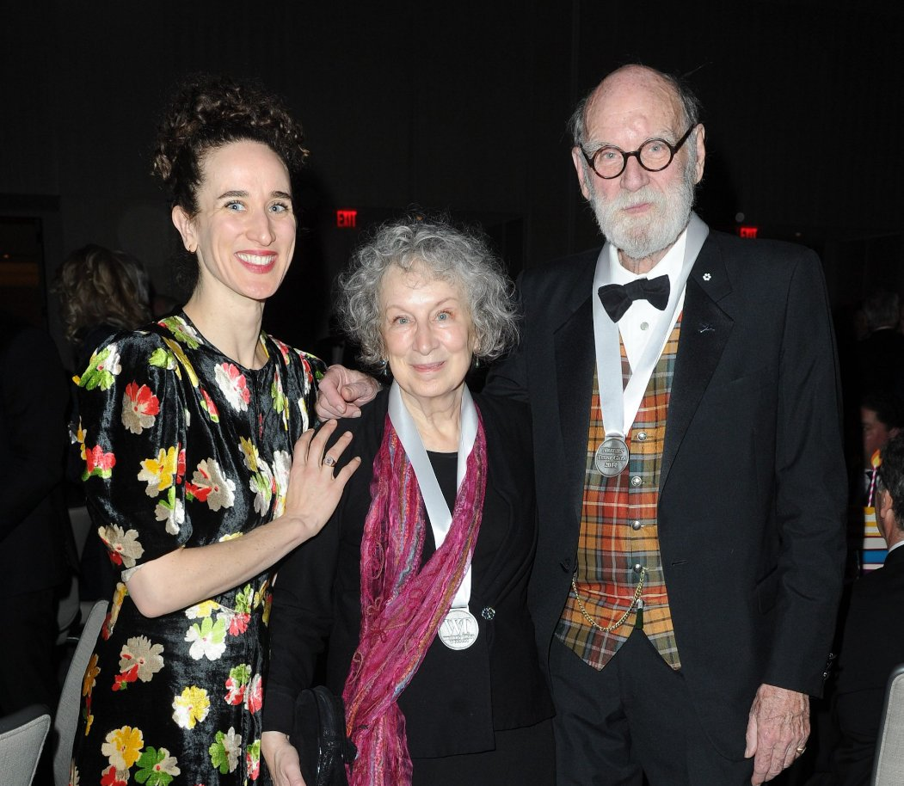

O nome completo da autora é: Margaret Eleanor Atwood.
2. Foi casada? teve filhos? onde ela nasceu (Cidade e País)?
Margaret Atwood se casou com o fotógrafo Anthony Armstrong-Jones em 1960. Depois se casou com Jim Polk (de 1968 à 1973), mas se separaram. Anos mais tarde se casou com Graeme Gibson (de 1973 à 2019, ano em que ele veio a falecer). Sua filha, Eleanor Atwood Gibson, nasceu durante o casamento com Graeme Gibson, no ano de 1976. Nascida em 18 de novembro de 1939 na cidade de Ottawa, na província de Ontário, no centro-leste do Canadá

Margaret Atwood ao lado da filha e marido
3. O autor estudou em alguma faculdade conhecida? Quais suas graduações?
Suas áreas de graduação estão relacionadas, em algum nível, com sua profissão: escritora.
Artes
Inglês
Filososfia
Francês
Em 1957, ela começou a estudar no Victoria College, na Universidade de Toronto. Ela também Graduou-se em 1961 no Bacharelado em Artes e Inglês (com honras), mas estudou também filosofia e francês.
E após ter ganhado a Medalha E.J. Pratt, em 1961, por seu livro de poemas "Double Persephone",
Atwood começou a estudar no Radcliffe College de Harvard com a bolsa de estudos Woodrow Wilson. Tornou-se mestra pela Radcliffe em 1962 e continuou os estudos de pós-graduação na
Universidade de Harvard por dois anos, mas não terminou a dissertação.mas em junho de 2011, Atwood recebeu um diploma honorário de Doutora em Literatura (honoris causa) da Universidade
Nacional da Irlanda, Galway
Em 16 de novembro de 2012; ela recebeu um diploma honorário do Royal Military College of Canada.
Ela também possui diplomas honorários de várias outras universidade canadenses, assim como da Universidade de Oxford, da Universidade de Cambridge e da Sorbonne.
Entre as faculdades de destaque que Margaret Atwood estudou estão:
Universidade de Harvard
Universidade de Oxford
Universidade de Cambridge
Universidade de Sorbonne
Radcliffe College
Universidade de Toronto
Leaside High School
Universidade Victoria (Localizada na Universidade de Toronto)
4. Quais foram suas atuações? (Literatura, Pintura, Música)?
É uma escritora canadense, romancista, poetisa, contista, ensaísta e crítica literária internacionalmente reconhecida, tendo ganho diversos prêmios relacionados à literatura. Se interessou pela escrita aos 16 anos de idade. Concluiu a sua graduação em Bacharelado em Artes e Inglês, mas também estudou filosofia e francês. Em 1961 ganhou o seu primeiro prêmio: A medalha E.J. Pratt . Margaret conquistou o Man Booker Prize , graças a um de seus livros, lançado em 2019. Além de sua carreira, ela possui diplomas honorários de várias outras universidade canadenses, assim como diplomas da Universidade se Oxford, Universidade de cambridge e Sorbonne.